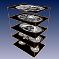
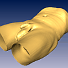
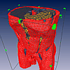
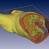

In modern medicine the application of advanced therapeutic methods involves an increasing amount of planning that is done with the aid of computers, e.g., in cancer therapy where the problem of locating a tumor arises. For such purposes often a geometric patient model is necessary that represents certain regions of interest within the patient's body.
Geometric patient models are usually constructed from a series of axis-aligned computer-tomographic (CT) or magnetic-resonance (MRI) scan images. Amira is able to read such images in DICOM or ACR-NEMA format, which is the standard format in radiology. A stack of CT images can be easily visualized using a number of OrthoSlice modules. In order to get a 3-dimensional impression of the patient the skin surface or the bones can also be extracted using the Isosurface module.
 Image stack
 Skin surface
Constructing such a geometric patient model first requires a segmentation step which in most cases has to be carried out interactively. Amira provides a number of powerful semi-automatic tools which simplify this task. After every voxel has been labeled, boundary faces between neighboring tissue compartments can be extracted. The resulting surfaces may have non-manifold topology.
A tetrahedral patient model can be visualized in several ways. The GridVolume module lets you select individual tetrahedrons of a model. You may select tetrahedrons corresponding to a particular type of tissue using the Material menu. You can also add or remove single tetrahedrons by clicking on them with the left mouse button (switch to interaction mode in the viewer by pressing ESC, keep the Ctrl key pressed down to remove a tetrahedron). Similarly, the GridBoundary module allows you to look at the boundary between regions of different tissue type. You may also slice the model across a cutting plane, this is provided by the GridCut module.
 Tetrahedral grid (Mesh Option required)
 Oblique slice (Mesh Option required)
To make scalar fields visible several different methods can be used, e.g., slicing, pseudo-coloring, isosurface display, or direct volume rendering. Below a simulated temperature distribution defined on a tetrahedral patient model is visualized by means of pseudo-colors mapped onto the grid model, as well as by an isosurface combined with volume rendering ((cell projection algorithm).